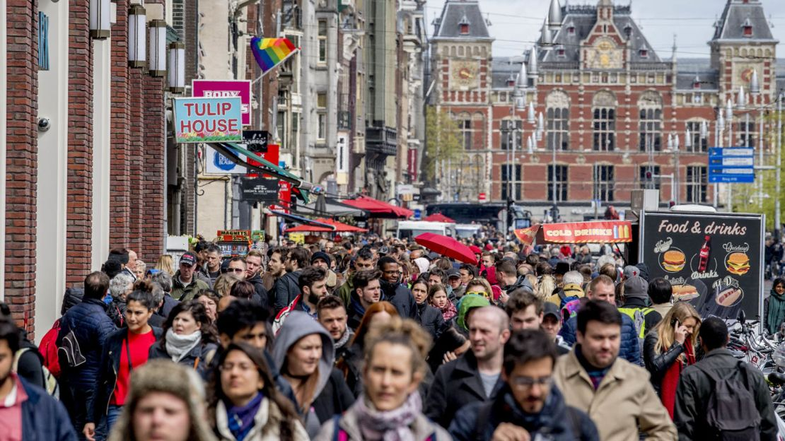

PowerBI
Se crearon cuatro paneles que abarcan la demograf√≠a, la experiencia laboral, la ubicaci√≥n y más informaci√≥n de los empleados. Esta informaci√≥n ten√≠a como objetivo ayudar al equipo de RR. HH. a comprender las causas de la p√©rdida de personal. üí°

PowerBI
Excel
Se exploraron los datos de ventas para descubrir tendencias, analizar patrones y proporcionar al equipo de ventas informaci√≥n para una toma de decisiones más informada. üìä

RStudio
Estos hallazgos sobre los patrones estacionales de los pasajeros de trenes son cruciales para comprender y planificar estrategias comerciales, permitiendo ajustes en los servicios y tarifas en funci√≥n de la demanda estacional. üöÜ

RStudio
Rmarkdown
Este trabajo enfatiza la importancia de comprender y abordar las fluctuaciones del turismo para tomar decisiones informadas, como mejorar la infraestructura para caravanas y campamentos e implementar pol√≠ticas de marketing para atraer más visitantes al pa√≠s.üó∫Ô∏è

Power BI
Mi equipo particip√≥ en un datathon de 4 horas de duraci√≥n organizado por Economia DataTech y Visit Valencia, DataViz, donde limpiamos los datos proporcionados y creamos un panel de control de turismo europeo. üë©ü誂Äçüíª

RStudio
Se analizaron las tendencias del turismo en los Pa√≠ses Bajos y se estimaron los cambios futuros del turismo utilizando modelos complejos de predicci√≥n de series temporales. üöô